令和5年度（R5）計算問題
測量士補試験の計算問題 10 問。紙と鉛筆で解いてから「答えと解説」を開いてください。関数の値は試験の巻末の関数表を使います。
No.3数学
次の文の［ア］及び［イ］に入る数値の組合せとして最も適当なものはどれか。次の中から選べ。
なお，関数の値が必要な場合は，巻末の関数表を使用すること。
三角形ABCで∠ABCの角度を同じ条件で5回測定し，表3の結果を得た。このとき，∠ABCの角度の最確値の標準偏差の値は［ア］となる。
また，表3の測定値の最確値を∠ABCの角度とし，辺ABの辺長を3.0 m，辺BCの辺長を8.0 mとしたとき，辺CAの辺長は［イ］となる。
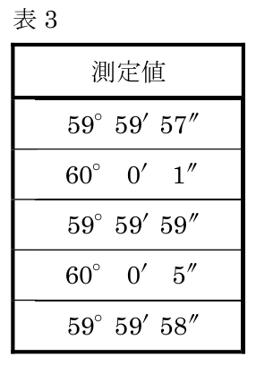
- ア=1.4″／イ=7.0 m
- ア=1.4″／イ=9.8 m
- ア=2.8″／イ=5.6 m
- ア=2.8″／イ=9.8 m
- ア=3.2″／イ=7.0 m
答えと解説
答え 1
ア 最確値（いちばん確からしい値）は 5 つの平均です。60°00′00″ からのずれだけを平均します。
最確値の標準偏差は、残差（測定値 − 平均）を 2 乗して足し、n(n − 1) で割って √ を付けます。n は測った回数 5 です。
40 ÷ (5 × 4) ＝ 2
√2 ＝ 1.41421 ≒ 1.4″
イ 2 辺とその間の角が分かっているので、余弦定理で残りの辺が出ます。
＝ 9 ＋ 64 − 48 × 0.50000 ＝ 49
CA ＝ 7.0 m（7² ＝ 49）
図の垂線で考えても同じです。BH ＝ 3 × cos 60° ＝ 1.5 m、HC ＝ 6.5 m、AH² ＝ 9 − 2.25 ＝ 6.75 なので、CA² ＝ 6.75 ＋ 42.25 ＝ 49。
No.7多角
公共測量におけるトータルステーションを用いた1級基準点測量において，図7に示すように，既知点Aと新点Bとの間の距離及び高低角の観測を行い，表7の観測結果を得た。Dを斜距離，αAを既知点Aから新点B方向の高低角，αBを新点Bから既知点A方向の高低角，iA，fAを既知点Aの器械高及び目標高，iB，fBを新点Bの器械高及び目標高とするとき，新点Bの標高は幾らか。最も近いものを次の中から選べ。
ただし，既知点Aの標高は10.00 mとし，Dは気象補正等必要な補正が既に行われているものとする。
なお，関数の値が必要な場合は，巻末の関数表を使用すること。
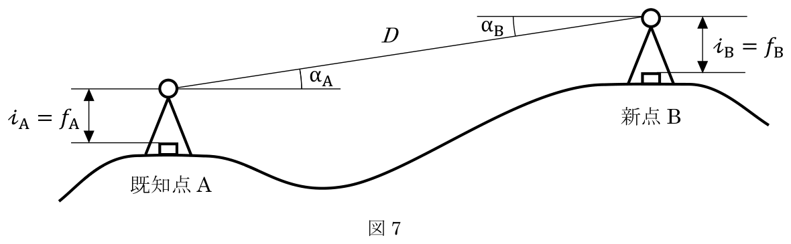
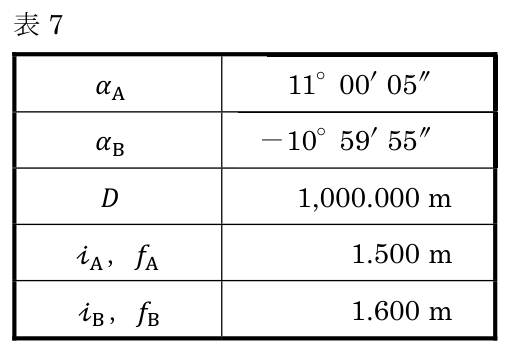
- 190.71 m
- 190.81 m
- 200.71 m
- 200.81 m
- 204.28 m
答えと解説
答え 3
A の標高から順に積み上げます。A の器械の高さ 1.500 m だけ上がり、そこから視準線（見通す線）に沿って上り、最後に B で目標の高さ 1.600 m だけ下がると、B の標高です。
高低角は、A から見た角と B から見た角を平均して使います。行きと帰りの両方を測って平均すると、地球の丸みや光の曲がりによる誤差が打ち消し合います。B から見た角は下向きなのでマイナスですが、平均は大きさで取ります。
上った高さ ＝ 1,000.000 × sin 11° ＝ 1,000 × 0.19081 ＝ 190.81 m
No.9GNSS
GNSS測量機を用いた基準点測量を行い，基線解析により基準点Aから基準点B及び基準点Cから基準点Bまでの基線ベクトルを得た。
表9は，地心直交座標系（平成14年国土交通省告示第185号）におけるX軸，Y軸，Z軸方向について，それぞれの基線ベクトル成分（ΔX，ΔY，ΔZ）を示したものである。基準点Aから基準点Cまでの斜距離は幾らか。最も近いものを次の中から選べ。
なお，関数の値が必要な場合は，巻末の関数表を使用すること。
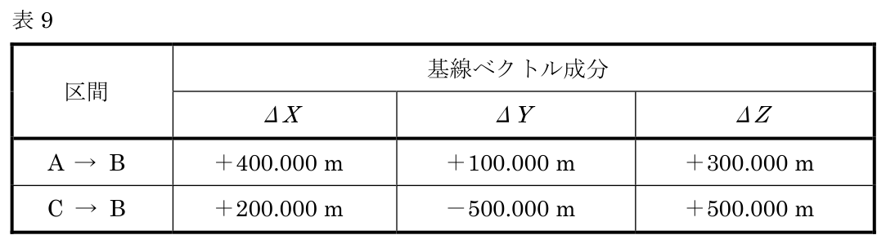
- 489.898 m
- 663.325 m
- 720.912 m
- 870.179 m
- 1,077.032 m
答えと解説
答え 2
基線ベクトルは「ある点から別の点まで、X・Y・Z 方向にどれだけ動くか」を表した数です。C→B を逆にたどる B→C は、符号を全部逆にしたものなので、A→C ＝ (A→B) − (C→B) です。
ΔY ＝ 100 − (−500) ＝ 600 m
ΔZ ＝ 300 − 500 ＝ −200 m
斜距離 ＝ √440,000 ＝ 100 × √44 ＝ 100 × 6.63325 ＝ 663.325 m
No.12水準
図12は，水準測量における観測の状況を示したものである。標尺の長さは3 mであり，図12のように標尺がレベル側に傾いた状態で測定した結果，読定値が1.500 mであった。標尺の上端が鉛直に立てた場合と比較してレベル側に水平方向で0.210 mずれていたとすると，標尺の傾きによる誤差は幾らか。最も近いものを次の中から選べ。
なお，関数の値が必要な場合は，巻末の関数表を使用すること。
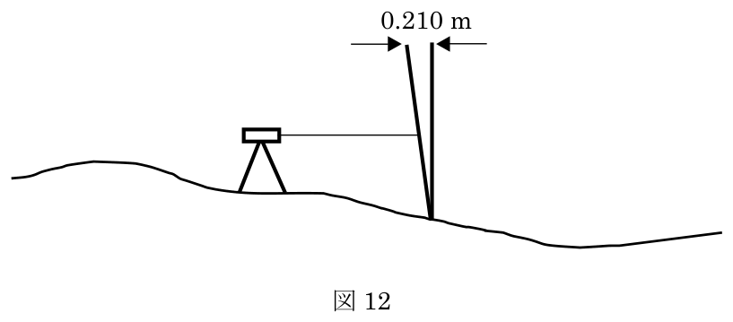
- 4 mm
- 10 mm
- 14 mm
- 20 mm
- 24 mm
答えと解説
答え 1
標尺が傾いていると、目盛りは斜めの長さを読んでしまいます。読み 1.500 m は標尺の長さ 3 m のちょうど半分なので、そこでの横のずれも 0.210 m の半分です。
正しい高さ x は、斜辺 1.500 m、横 0.105 m の直角三角形の残りの辺です。
1.496² ＝ 2.238016、1.497² ＝ 2.241009 → x は 1.496 と 1.497 の間
誤差 ＝ 1.500 − x は 3 mm と 4 mm の間 → 最も近いのは 4 mm
No.14地形
図14は，ある道路の縦断面を模式的に示したものである。この道路において，GNSS測量により縮尺1/1,000の地形図作成を行うため，縦断面上の点A～Cの3点で観測を実施した。点Aの標高は78 m，点Bの標高は73 m，点Cの標高は69 mで，点Aと点Bの間の水平距離は50 m，点Bと点Cの間の水平距離は48 mであった。
このとき，点Aと点Bの間を結ぶ道路とこれを横断する標高75 mの等高線との交点をX，点Bと点Cの間を結ぶ道路とこれを横断する標高70 mの等高線との交点をYとすると，この地形図上における交点Xと交点Yの間の水平距離は幾らか。最も近いものを次の中から選べ。
ただし，点A～Cはこの地形図上で同一直線上にあり，点Aと点Bの間を結ぶ道路，点Bと点Cの間を結ぶ道路は，それぞれ傾斜が一定でまっすぐな道路とする。
なお，関数の値が必要な場合は，巻末の関数表を使用すること。
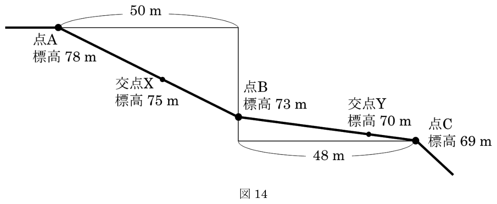
- 3.0 cm
- 3.6 cm
- 4.2 cm
- 5.6 cm
- 7.0 cm
答えと解説
答え 4
坂の傾きは一定なので、水平距離は標高の差に比例します。X も Y も、B を基準にして比例で出します。
A と B は標高の差 78 − 73 ＝ 5 m で水平 50 m。X は B より 75 − 73 ＝ 2 m 高いので
B と C は標高の差 73 − 69 ＝ 4 m で水平 48 m。Y は B より 73 − 70 ＝ 3 m 低いので
縮尺 1/1,000 → 56 m ÷ 1,000 ＝ 0.056 m ＝ 5.6 cm
No.15地形
細部測量において，基準点Aにトータルステーションを整置し，点Bを観測したときに2′40″の水平方向の誤差があった場合，点Bの水平位置の誤差は幾らか。最も近いものを次の中から選べ。
ただし，基準点Aと点Bの間の水平距離は97 m，角度1ラジアンは（2×10⁵）″とする。
また，距離測定と角度測定は互いに影響を与えないものとし，角度測定以外の誤差は考えないものとする。
なお，関数の値が必要な場合は，巻末の関数表を使用すること。
- 38 mm
- 59 mm
- 78 mm
- 97 mm
- 116 mm
答えと解説
答え 3
1 ラジアンは、弧の長さが半径と同じになる角です。なので「半径 × 角（ラジアン）＝ 弧の長さ」で、小さな角なら弧の長さがそのまま B の位置のずれです。
160″ をラジアンに直す 160 ÷ (2 × 10⁵) ＝ 160 ÷ 200,000 ＝ 0.0008
No.17写真
画面距離7 cm，画面の大きさ17,000画素×11,000画素，撮像面での素子寸法5 μmのデジタル航空カメラを用いて鉛直下に向けた空中写真撮影を計画した。撮影基準面での地上画素寸法を20 cmとした場合，標高0 mからの撮影高度は幾らか。最も近いものを次の中から選べ。
ただし，撮影基準面の標高は300 mとする。
なお，関数の値が必要な場合は，巻末の関数表を使用すること。
- 1,900 m
- 2,200 m
- 2,500 m
- 2,800 m
- 3,100 m
答えと解説
答え 5
図の 2 つの三角形（レンズの上と下）は相似なので、「素子の大きさ ： 画面距離 ＝ 地上の大きさ ： 撮影基準面からカメラまでの高さ H」です。画面距離は、レンズから撮像面までの長さ。単位を m にそろえます。
H ＝ 0.07 × 0.2 ÷ 0.000005 ＝ 0.014 ÷ 0.000005 ＝ 2,800 m
撮影基準面は標高 300 m にあるので、標高 0 m からの高さは 300 m 高くなります。
No.21地図
図21は，国土地理院がインターネットで公開しているウェブ地図「地理院地図」の一部（縮尺を変更，一部を改変）である。この図にある自然災害伝承碑の経緯度で最も近いものを次のページの中から選べ。
ただし，表21に示す数値は，図の中にある裁判所及び税務署の経緯度を表す。
なお，関数の値が必要な場合は，巻末の関数表を使用すること。
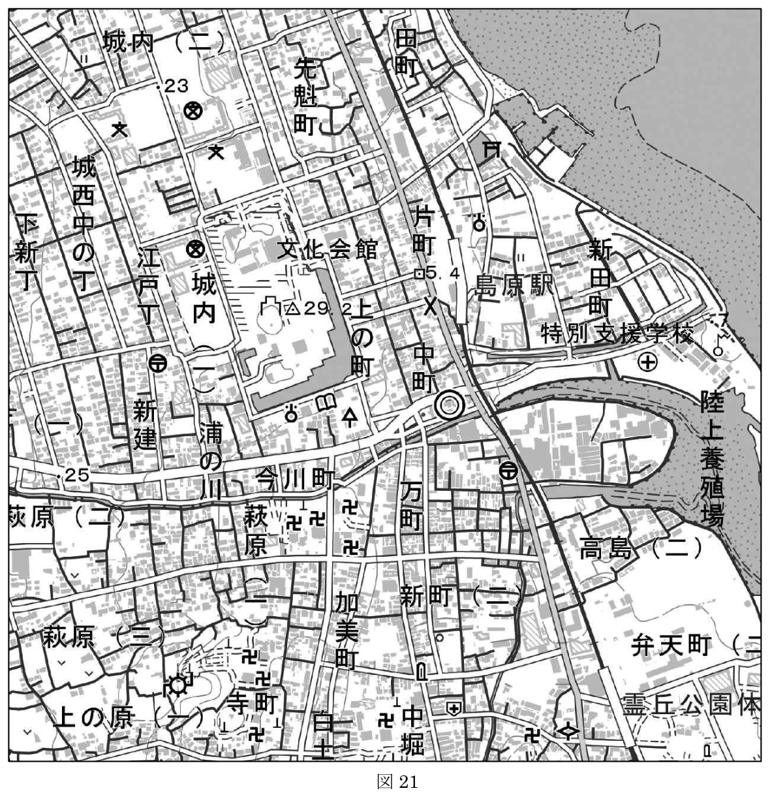
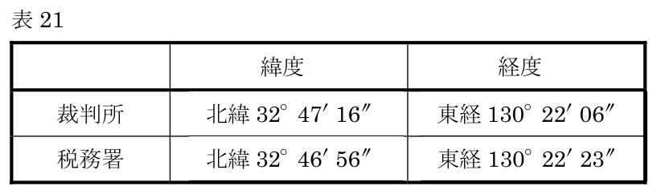
図の出典：国土地理院「地理院地図」（測量士補試験の問題に掲載されたもの）
- 北緯32°46′54″ 東経130°22′34″
- 北緯32°46′57″ 東経130°22′15″
- 北緯32°46′59″ 東経130°22′12″
- 北緯32°47′21″ 東経130°22′35″
- 北緯32°47′23″ 東経130°22′00″
答えと解説
答え 3
図 21 の中から 3 つの地図記号を探します。裁判所は立札の形、税務署はそろばんの玉の形、自然災害伝承碑は石碑の形の中に縦線が 1 本入った記号です。
図の右へ行くほど経度が大きく、下へ行くほど緯度が小さくなります。裁判所と税務署の差を表 21 から出し、定規で測った長さの比で伝承碑の位置を割り出します。
緯度の差 47′16″ − 46′56″ ＝ 20″ （図の上で縦 61 mm）
伝承碑は、裁判所から東へ 14 mm、南へ 49.5 mm です。
緯度 20″ × 49.5 ÷ 61 ≒ 16.2″ → 47′16″ − 16.2″ ＝ 46′59.8″
最も近いのは、北緯 32°46′59″、東経 130°22′12″（選択肢 3）です。
図の出典：国土地理院「地理院地図」（測量士補試験の問題に掲載されたもの）。赤・青の線と文字は当サイトが書き足しました
No.25応用
図25は，平たんな土地における，円曲線始点A，円曲線終点Bからなる円曲線の道路建設の計画を模式的に示したものである。交点IPの位置に川が流れており，杭を設置できないため，点Aと交点IPを結ぶ接線上に補助点C，点Bと交点IPを結ぶ接線上に補助点Dをそれぞれ設置し観測を行ったところ，α＝170°，β＝110°であった。曲線半径R＝300 mとするとき，円曲線始点Aから円曲線終点Bまでの路線長は幾らか。最も近いものを次の中から選べ。
なお，円周率π＝3.14とし，関数の値が必要な場合は，巻末の関数表を使用すること。
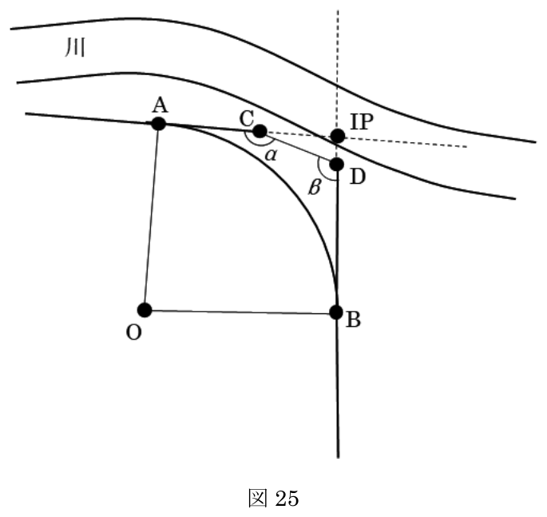
- 382 m
- 419 m
- 471 m
- 524 m
- 576 m
答えと解説
答え 2
IP に杭を打てないので、三角形 C・IP・D の角から交角 I（IP で道路の向きが変わる角）を出します。
D の内角 ＝ 180° − 110° ＝ 70°
交角 I ＝ 10° ＋ 70° ＝ 80°
交角は三角形の IP の外角にあたるので、残り 2 つの内角の和です。円曲線の中心角 ∠AOB は交角に等しいので（四角形 O・A・IP・B で、A と B は接線と半径のなす 90°）
＝ 300 × 3.14 × 80 ÷ 180 ＝ 75,360 ÷ 180 ≒ 419 m
No.27応用
図27は，境界点A，B，C，Dで囲まれた四角形の土地を表したもので，境界点A及び境界点Bは道路①との境界となっている。また，土地を構成する各境界点の平面直角座標系（平成14年国土交通省告示第9号）に基づく座標値は表27のとおりである。
道路①が拡幅されることになり，新たな境界線PQが引かれることとなった。直線ABと直線PQが平行であり，拡幅の幅が2.000 mである場合，点P，Q，C，Dで囲まれた四角形の土地の面積は幾らか。最も近いものを次の中から選べ。
なお，関数の値が必要な場合は，巻末の関数表を使用すること。
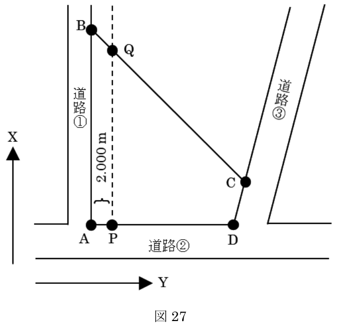
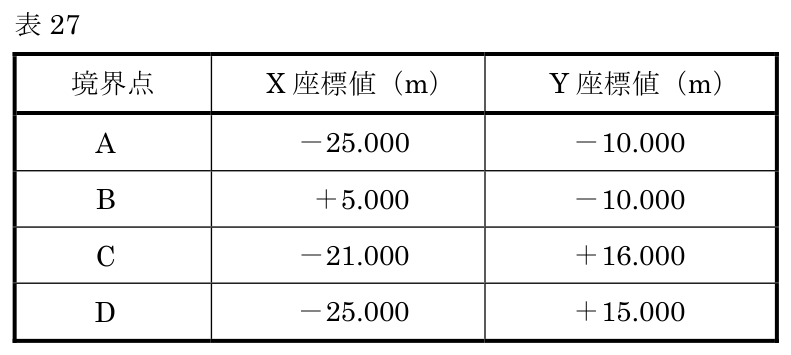
- 368 m²
- 382 m²
- 440 m²
- 476 m²
- 502 m²
答えと解説
答え 2
まず新しい境界線 PQ の 2 点の座標を出します。AB は Y ＝ −10 の南北の線なので、2.000 m 東に寄せた PQ は Y ＝ −8 の線です。
BC の傾き X が 5 → −21 と 26 減る間に、Y は −10 → 16 と 26 増える
→ Y が 2 増えると X は 2 減る → Q (3, −8)
座標から面積を出します。P を原点に移す（全部の X に 25、Y に 8 を足す）と数字が小さくなります。P→Q→C→D の順に、「X ×（次の点の Y − 前の点の Y）」を足すと、面積の 2 倍です。
P 0 × (0 − 23) ＝ 0
Q 28 × (24 − 0) ＝ 672
C 4 × (23 − 0) ＝ 92
D 0 × (0 − 24) ＝ 0
面積 ＝ (672 ＋ 92) ÷ 2 ＝ 764 ÷ 2 ＝ 382 m²